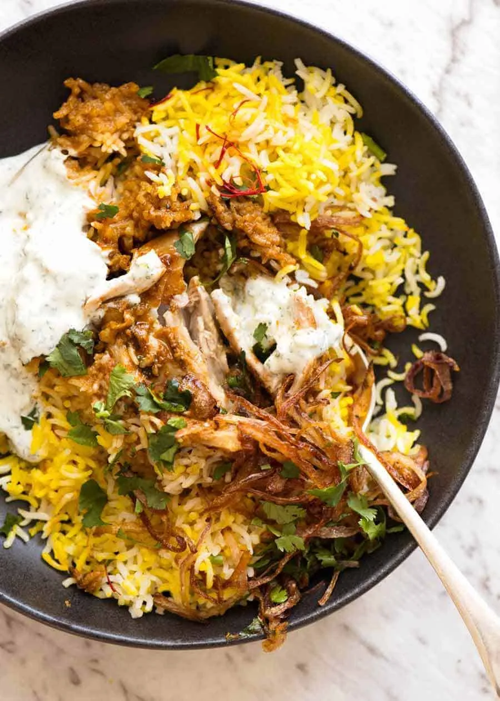

Biryani

Description
A photo of chicken biryani. Biryani is a fragrant, flavourful mixed
rice dish that combines meat, fish or vegetables with long-grain
Basmaati rice and a rich blend of warm spices like saffron, cardamom
and cinnamon.
Ingredients
- 750 g chicken thighs
Marinade
- 150 ml yoghurt (plain)
- 2 tbsp vegetable oil
- 6 garlic cloves (minced)
- 2 tsp finely grated fresh ginger
- 1/8 tsp ground turmeric
- 1/4 tsp cinnamon
- 1/2 tsp cayenne
- 1/2 tsp ground cardamom
- 2 tsp garam masala
- 2 tsp coriander
- 1 tbsp cumin
- 2 tbsp paprika
- 1 3/4 tsp salt
Par boiled rice
- 2 tbsp salt
- 10 whole cloves
- 5 dried bay leaves
- 1 star anise
- 6 green cardamon pods
- 450 g uncooked basmati rice
Crispy onions
- 2 medium onions (halved and finely sliced)
- 250 ml oil (for frying)
Saffron
- 1 tsp saffron threads
- 2 tbsp warm water
Biryani
- 1 cup coriander / cilantro (chopped)
- 60 g ghee (melted)
Garnish
- Crispy onions (above)
- Chopped coriander / cilantro
- Yoghurt
Steps
-
Mix Marinade in a large pot (about 26cm
diametre). Add chicken and coat well. Marinate for 20 minutes to
overnight.
-
Par Boil the Rice
-
Bring 3 litres of water to the boil, then add the salt
and spices. Add the rice, bring back to the boil, then
cook for 4 minutes, or until the rice is just cooked but
still slightly firm in the centre. Drain immediately and
set aside. (See Note 10 regarding leaving the whole
spices in.)
-
Make the Crispy Onions
-
Heat the oil in a large saucepan over medium-high heat.
Cook the onion in batches for 3–4 minutes, until golden
brown. Transfer to a paper towel-lined plate. Repeat
with the remaining onion.
-
Prepare the Saffron
-
Place the saffron in a bowl and leave it for at least 10
minutes.
-
Cook the Biryani
-
Place the pot containing the chicken onto the stove over
medium heat.
- Cover and cook for 5 minutes.
-
Remove the lid and cook for another 5 minutes, turning
the chicken twice.
- Remove from the heat.
-
Turn the chicken so the skin side is facing down,
covering most of the base of the pot.
-
Scatter over half of the crispy onion, then half of the
coriander.
- Top with all of the rice.
- Gently pat down and flatten the surface.
-
Drizzle the saffron over the rice in a random pattern,
then drizzle over the ghee.
-
Place the lid on and return the pot to the stove over
medium heat.
-
As soon as you see steam, reduce the heat to low and
cook for 25 minutes.
-
Remove from the stove and let it rest, with the lid on,
for 10 minutes.
-
Serve
-
Aim to serve so you get patches of yellow rice, white
rice, curry-stained rice, and chicken rather than mixing
everything together.
-
Use a large spoon, dig deep into the pot, and try to
scoop up as much as possible in each serving.
- Transfer to a serving bowl or platter.
-
Garnish with the remaining crispy onion and coriander,
and serve with yoghurt on the side.
Back